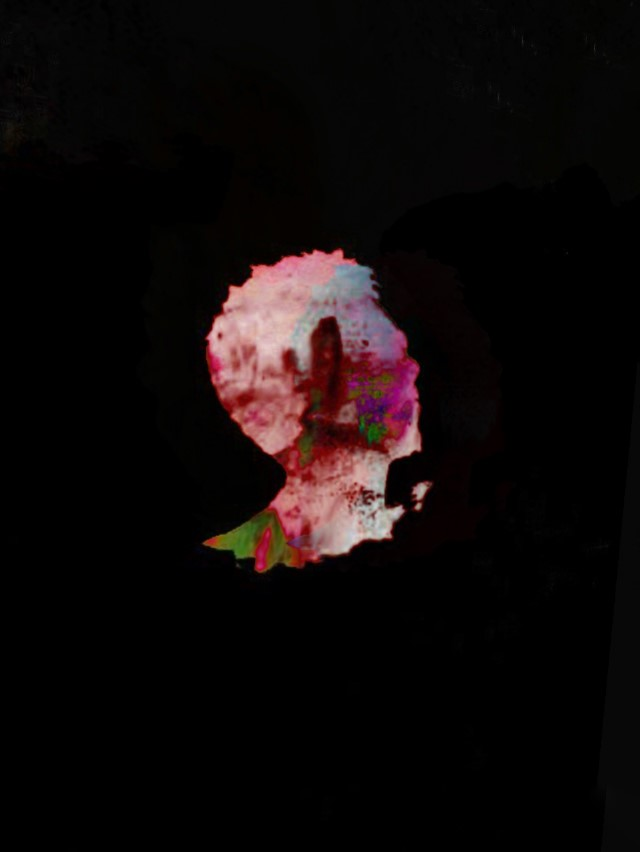

|  | ZEMICHAEL.AMSALU |
|
se.zemichael.amsalu@gmail.com zemichaelamsalu@yahoo.com Home AboutMe Curriculum Vitae Hobbies |
HobbiesI like movies and football Favorite Movies
Favorite clubManchester unitedManchester United Football Club is a professional football club based in Old Trafford, Greater Manchester, England, that competes in the Premier League, the top flight of English football. Nicknamed "the Red Devils", the club was founded as Newton Heath LYR Football Club in 1878, changed its name to Manchester United in 1902 and moved to its current stadium, Old Trafford, in 1910. Manchester United have won more trophies than any other club in English football, with a record 20 League titles, 12 FA Cups, five League Cups and a record 21 FA Community Shields. United have also won three UEFA Champions Leagues, one UEFA Europa League, one UEFA Cup Winners' Cup, one UEFA Super Cup, one Intercontinental Cup and one FIFA Club World Cup. In 1998–99, the club became the first in the history of English football to achieve the continental European treble. By winning the UEFA Europa League in 2016–17, they became one of five clubs to have won all three main UEFA club competitions. The 1958 Munich air disaster claimed the lives of eight players. In 1968, under the management of Matt Busby, Manchester United became the first English football club to win the European Cup. Alex Ferguson won 38 trophies as manager, including 13 Premier League titles, 5 FA Cups and 2 UEFA Champions Leagues, between 1986 and 2013, when he announced his retirement. Manchester United was the highest-earning football club in the world for 2016–17, with an annual revenue of €676.3 million, and the world's third most valuable football club in 2019, valued at £3.15 billion ($3.81 billion). As of June 2015, it is the world's most valuable football brand, estimeted to be worth $1.2 billion. After being floated on the London Stock Exchange in 1991, the club was purchased by Malcolm Glazer in May 2005 in a deal valuing the club at almost £800 million, after which the company was taken private again, before going public once more in August 2012, when they made an initial public offering on the New York Stock Exchange. Manchester United is one of the most widely supported football clubs in the world, and has rivalries with Liverpool, Manchester City, Arsenal and Leeds United. Other Interests
|